About

Hi! Thanks for visiting the site I am undergraduate advisor at the University of Vermont's College of Nursing and Health Sciences, and I'm pursuing a self designed M.Ed. in Arts Advocacy. The purpose of this site is to show off some of my artwork, diary my programming education and game development, and to occassionally blog about random stuff I care about (movies, music, food, whatever).
Photos, Shops, and Drawings
All works are my own photography. Drawing, manipulation and editing done in Photoshop.
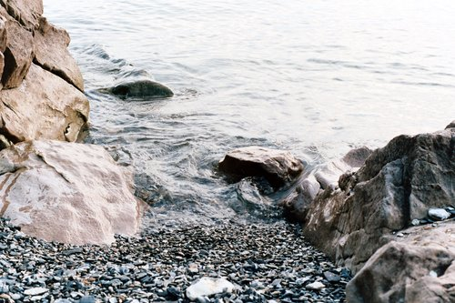
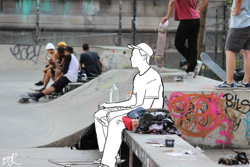
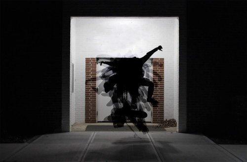
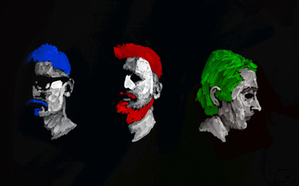
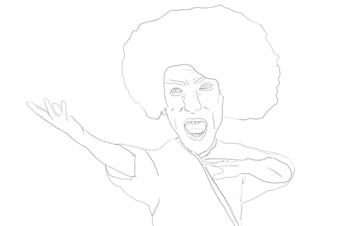
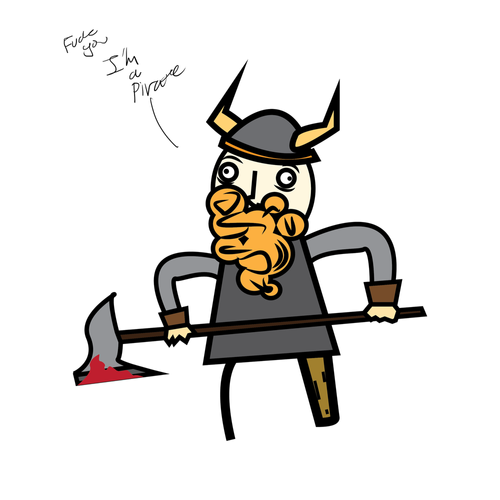
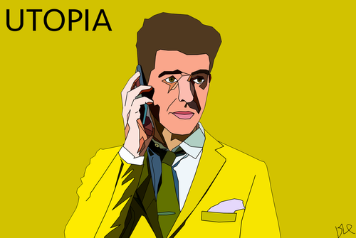
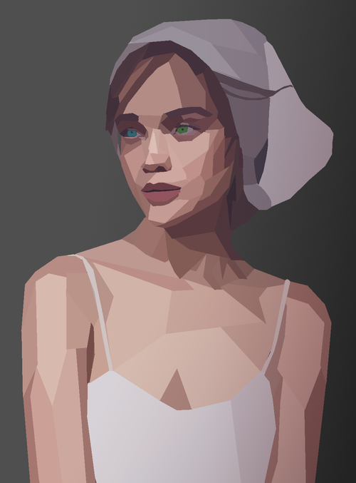
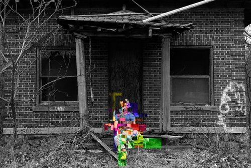
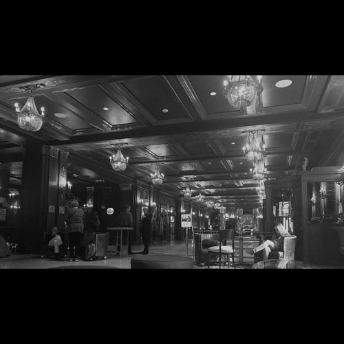
Games
Galactix
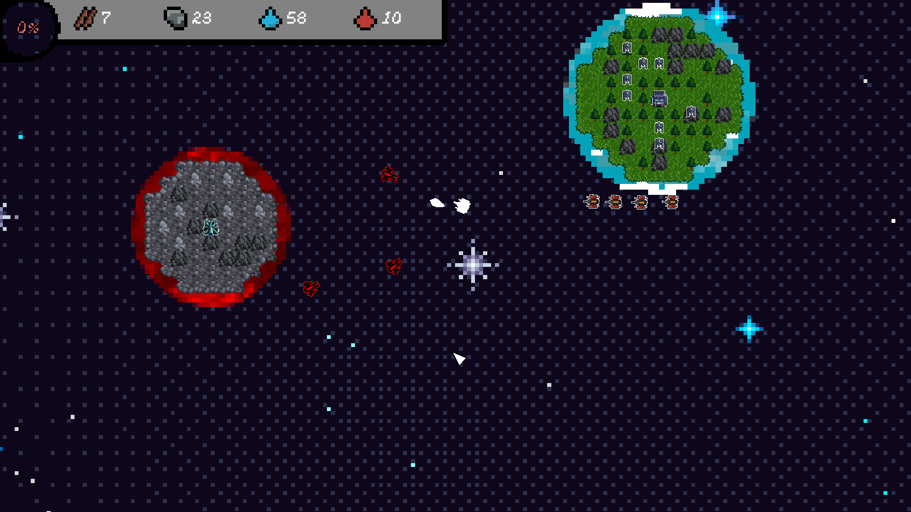
Link to Itch.io Page
I was really excited to get back into Game making for the 2024 GMTK jam, but my contributions were smaller than I hoped this year. I assembled a team of 7 this time, making it clear that I focused on 3D art, but the team took a turn and opted for a 2D game. I made the UI, title screen, player, enemy, and machine sprites, but the really impressive pixel art was done by a pixel artist I asked to join last minute. Lessons for next time I guess.
Space Ops
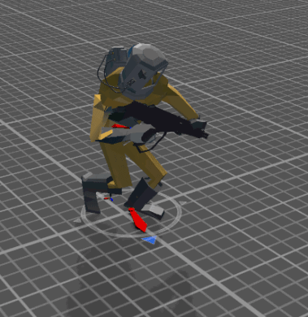
Link to the Itch.io Page
I served as the sole artist on a team of 4 people for the 2021 GMTK game jam. Space Ops was a simple wave based top down shooter. Pretty fun to work on, not the most impressive game ever made.
 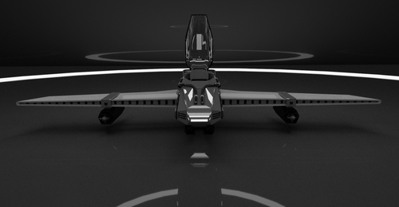
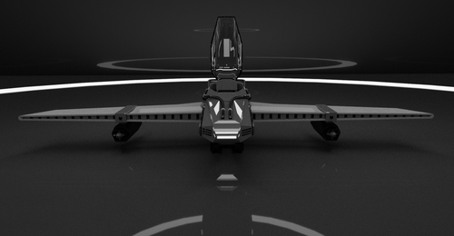
 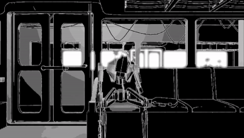
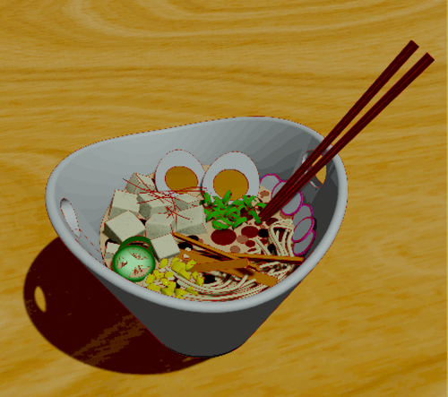
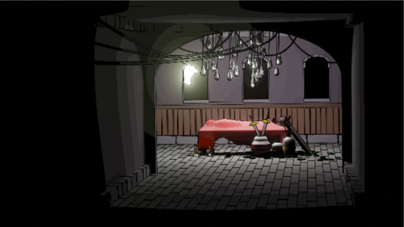
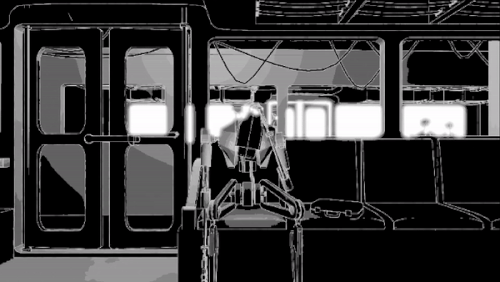
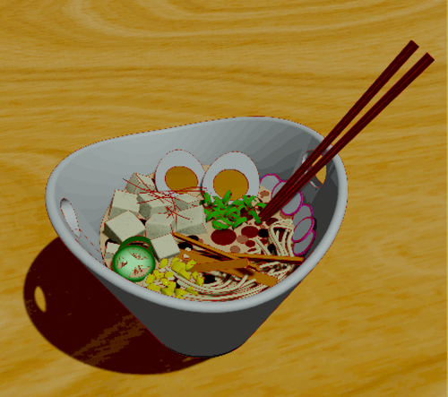
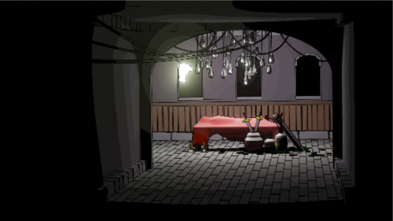
 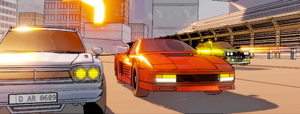
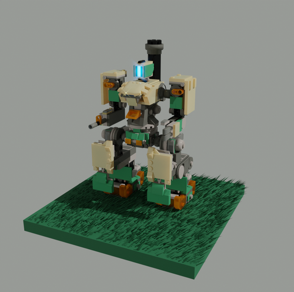
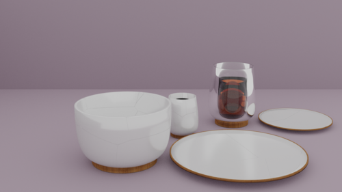
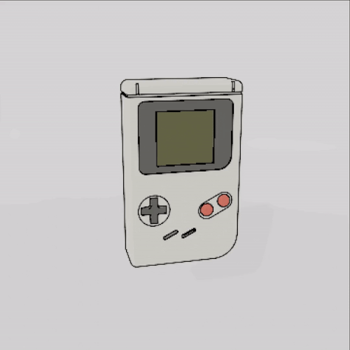
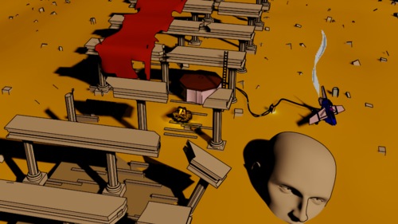
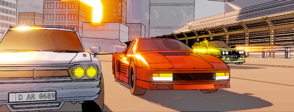
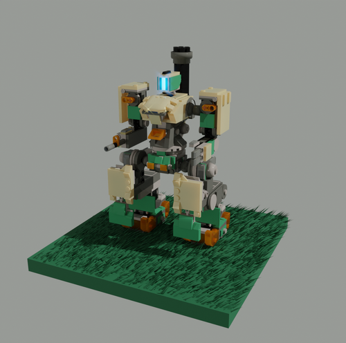
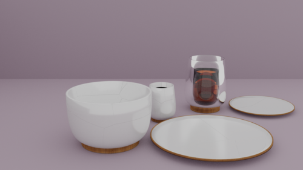
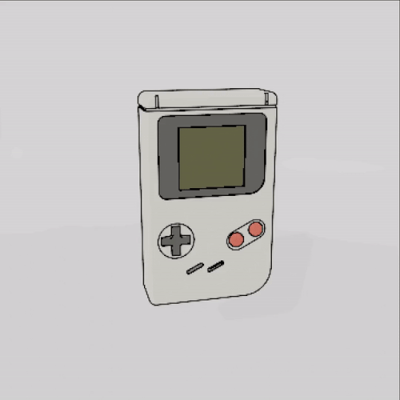
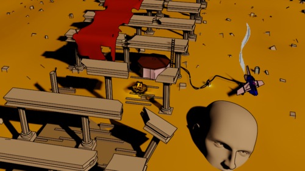
 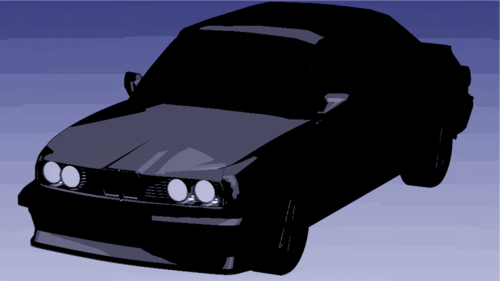
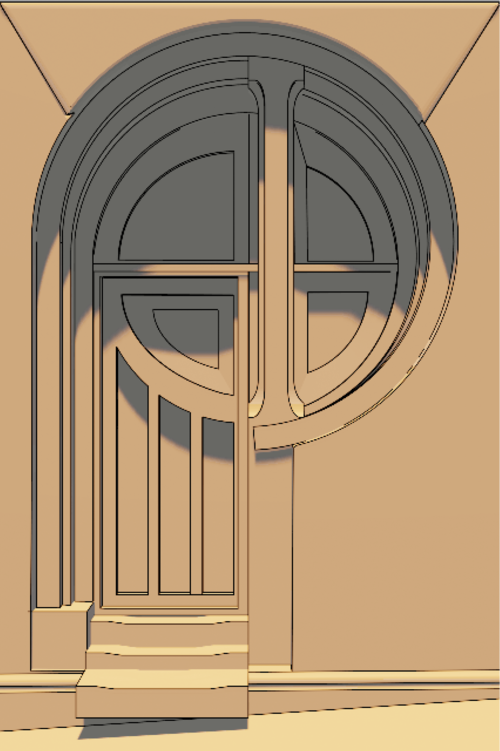
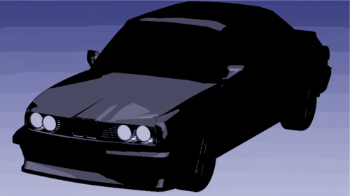
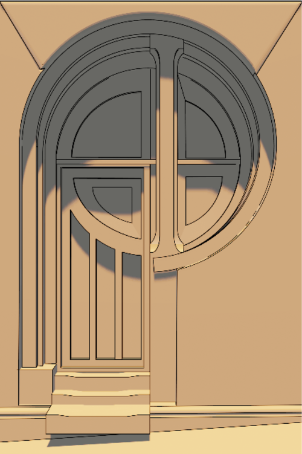
 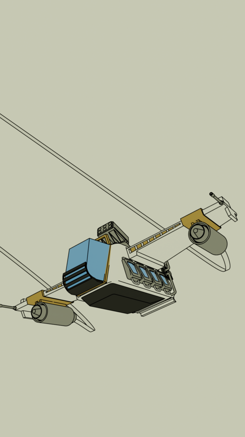
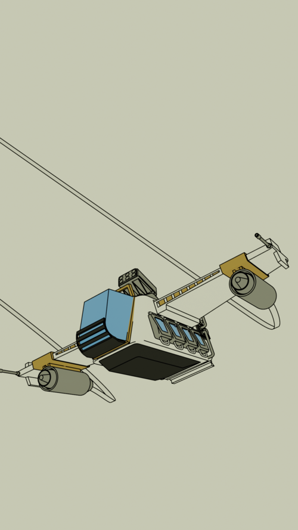